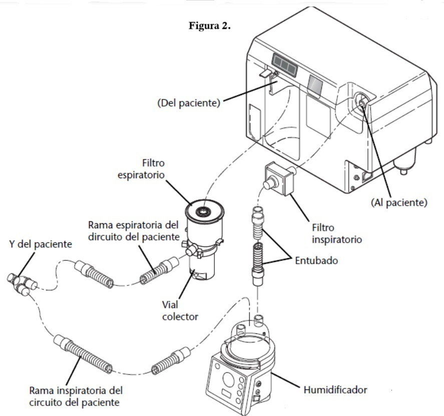
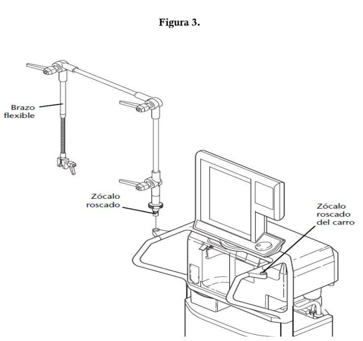

| Código: | ESP-BIO-18 | Versión: | 01 |
| Emisión: | 18-nov-21 | Vigencia: | 2 años |
Departamento de Biomédica Ext:123
Un ventilador médico es un dispositivo que asiste o reemplaza la función respiratoria de los pacientes que tienen dificultades para respirar por sí mismos. Suministra aire mezclado con oxígeno a los pulmones y regula el flujo de acuerdo a parámetros establecidos, como el volumen y la frecuencia respiratoria.
ANTES DE COMENZAR
Después de haber revisado los puntos arriba descritos se procederá a la instalación del circuito paciente y humidificador, como se muestra en la siguiente imagen.

No conecte al paciente antes de completar la configuración para el paciente. Si
conecta a un paciente antes de completar el proceso de configuracion, puede
producirse un ERROR EN EL PROCEDIMIENTO, por lo que comenzará
la ventilación de seguridad.
Una vez que encienda el ventilador, el ventilador, ejecutará el ATc
y a continuación mostrará la pantalla (Fig.4) en la pantalla inferior.
Consulte el área de mensajes (esquina inferior derecha de la pantalla inferior) para saber
como continuar con el proceso de configuración.
Verificar la instalación del brazo flexible y su orientación hacia el paciente para poder apoyar el circuito paciente.
